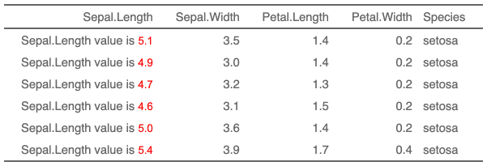

| as_chunk {flextable} | R Documentation |
The function lets add text within flextable
objects with function compose().
It should be used inside a call to as_paragraph().
as_chunk(x, props = NULL, formatter = format_fun, ...)
x |
text or any element that can be formatted as text
with function provided in argument |
props |
an |
formatter |
a function that will format x as a character vector. |
... |
additional arguments for |

Other chunk elements for paragraph:
as_bracket(),
as_b(),
as_equation(),
as_highlight(),
as_image(),
as_i(),
as_sub(),
as_sup(),
colorize(),
gg_chunk(),
hyperlink_text(),
linerange(),
lollipop(),
minibar(),
plot_chunk()
library(officer) ft <- flextable( head(iris)) ft <- compose( ft, j = "Sepal.Length", value = as_paragraph( "Sepal.Length value is ", as_chunk(Sepal.Length, props = fp_text(color = "red")) ), part = "body") ft <- color(ft, color = "gray40", part = "all") ft <- autofit(ft) ft